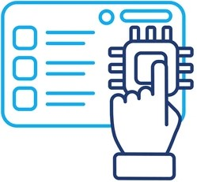

Bienvenidos al sistema
Este es un sistema de encuestas sobre el uso de Inteligencia Artificial en el desarrollo de software.
Este es un sistema de encuestas sobre el uso de Inteligencia Artificial en el desarrollo de software.
Julián David Zapata Múnera.
Año 2026.
Técnico Laboral como Asistente en Desarrollo de Software.
Participa en nuestra encuesta sobre el uso de IA en programación.
Clic aquí